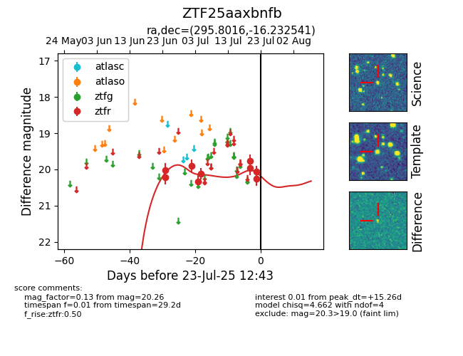

Target ZTF25aaxbnfb at 2025-07-23 12:43, see:
FINK: fink-portal.org/ZTF25aaxbnfb
Lasair: lasair-ztf.lsst.ac.uk/objects/ZTF25aaxbnfb
ALeRCE: alerce.online/object/ZTF25aaxbnfb
alt names
ZTF25aaxbnfb (ztf,fink)
coordinates:
equatorial (ra, dec) = (295.8016,-16.23254)
galactic (l, b) = (23.7813,-18.59315)
photometry
last ztfr=20.26
9 ztfr detections
